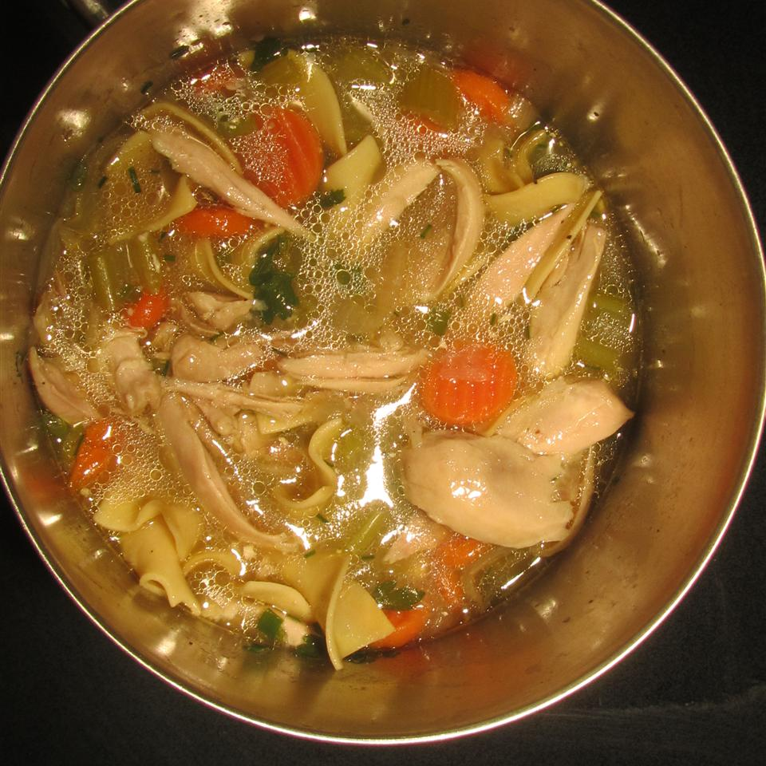

Old-fashioned chicken and noodles

Description
This was a Sunday favorite when I was growing up.
Sometimes my mother dipped the chicken in seasoned flour after boiling and fried it.
Ingredients
- 1 (2 to 3 pound) whole chicken, cut into pieces
- 4 stalks celery, diced
- celery tops
- 1 carrot, shredded
- 1 onion, halved - unpeeled
- ground black pepper to taste
- 3 (32 fluid ounce) containers chicken broth
- 2 eggs, beaten
- 1 cup warm water
- 2 tablespoons vegetable oil
- 1 teaspoon salt
- 3 cups all-purpose flour
Steps
-
In a large pot over medium heat, combine chicken, celery and their tops, carrot, onion and its peel, and pepper.
Pour broth over and bring to a boil.
Cover, reduce heat and simmer until chicken is tender and falls from the bone, about 45 minutes.
-
While chicken is cooking, make noodles.
In a large bowl, combine eggs, water, oil, salt and enough of the flour to make a stiff dough.
-
Strain chicken stock, reserving meat, celery and carrots.
Pull meat from bones and return strained stock and meat, celery and carrots to pot. Bring to a boil.
Make noodles by cutting dough from a broth-dipped spoon or using scissors or your fingers to make small,
chickpea sized, noodles and dropping them in the boiling water. When the noodles rise to the surface they are done.